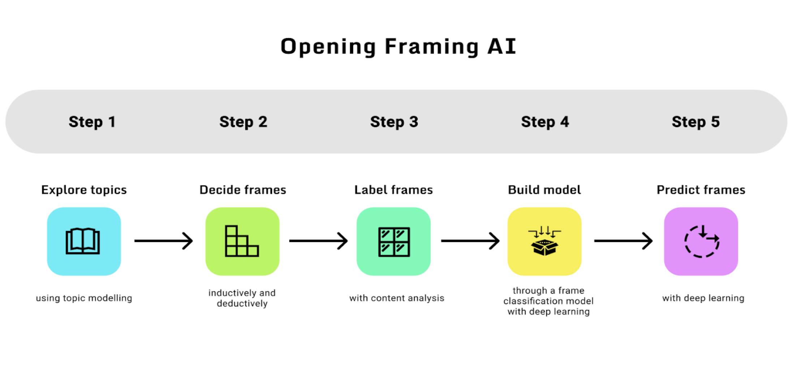

Open Framing with AI
A tool for analyzing multilingual media frames using AI technologies
Framing refers to the selection of some aspects of a perceived reality and make them more prominent in a communicating text such as a news article and a Tweet. When some news media emphasize the mental illness of gun shooters over other other aspects of gun violence in covering the issue, this is framing. When you choose to purchase a yogurt product that is advertised "90 percent fat" rather than the one saying "10 percent fat," this is when the framing effect occurs.
Open Framing with AI (OFAI) introduces an approach that conducts systematic framing analysis of multilingual texts, drawing upon theories and methods from both social and computer sciences. If your goal is to make sense of a large textual dataset, our AI-assisted tool can guide you quickly identify frames that dominate the discussion.
Use OFAI and follow the 5-step process to predict media frames:
How it works:
If you are interested in understanding the framing of a certain issue, a public figure, a product or any other subjects, you should first collect data (e.g., news articles, social media posts, advertisements) about the subject and then use our tool to conduct the framing analysis following the 5 steps. Our tool is especially useful for processing "big data" -- the size of the data is beyond what manual text analysis can handle. Detailed information and instructions are provided in each step and can be found in this documentation. You can also learn about the tool from our demo cases.
Our tool is advantageous because:
- The methodology is grounded in both social and computer sciences. You will access the state-of-the-art computer science methods, and get results that are valid and interpretable according to the communication research standard.
- All the algorithms used in the analysis are open to users. There is no black box problem. See our source codes here.
- The tool is designed to be click-and-play, so users with relatively little programming knowledge can still run complex algorithms such as deep learning.
- The tool can be applied to analyze texts of different languages in addition to English.